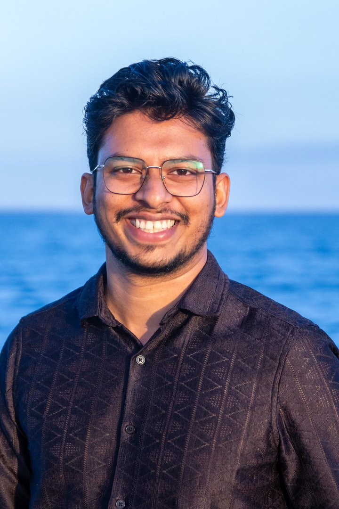
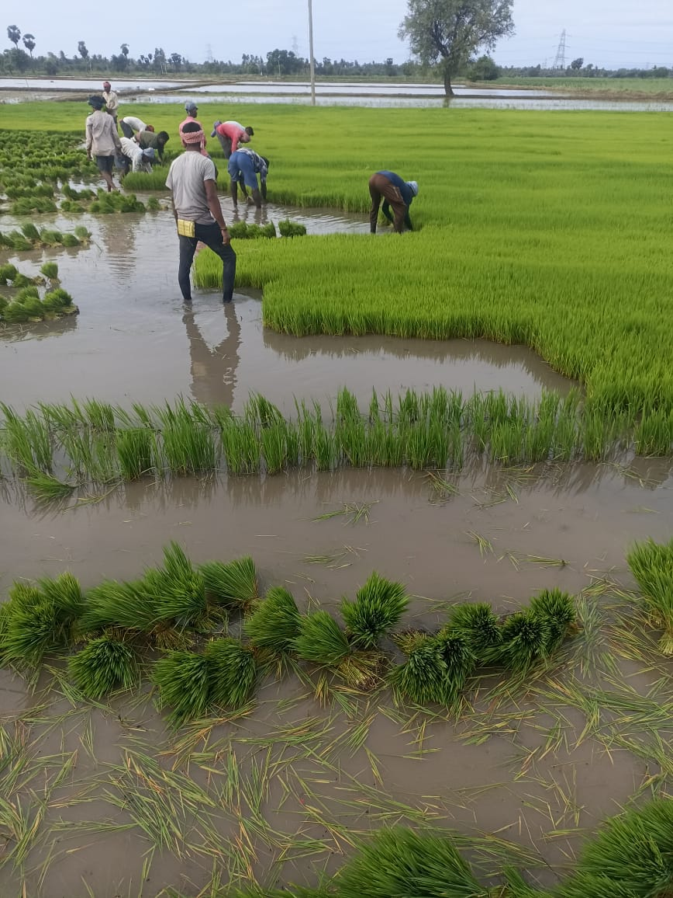
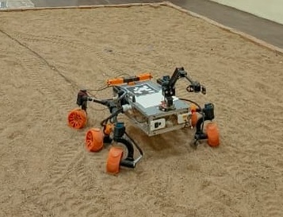
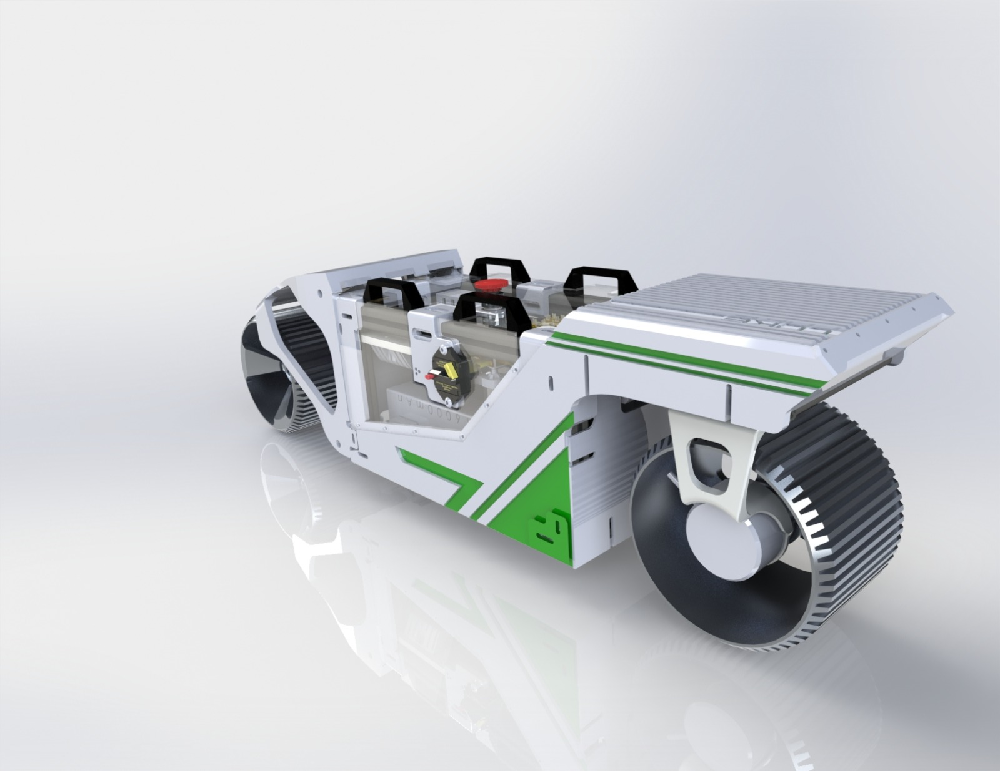
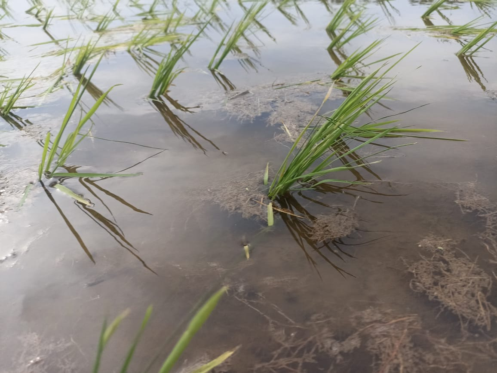
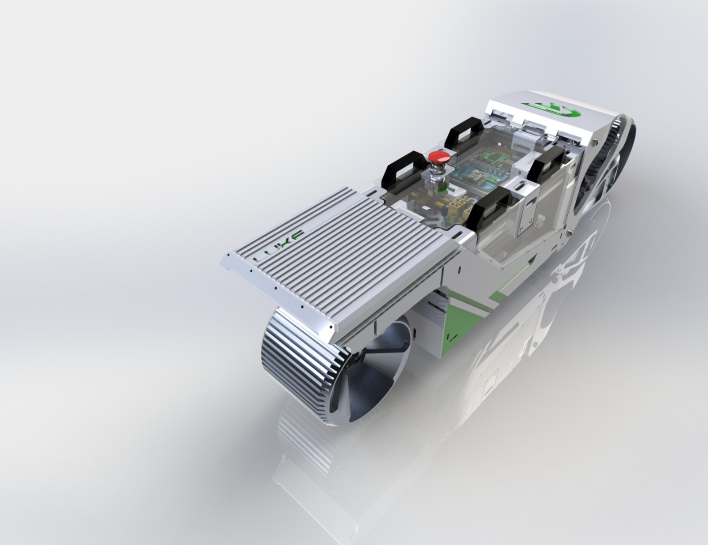
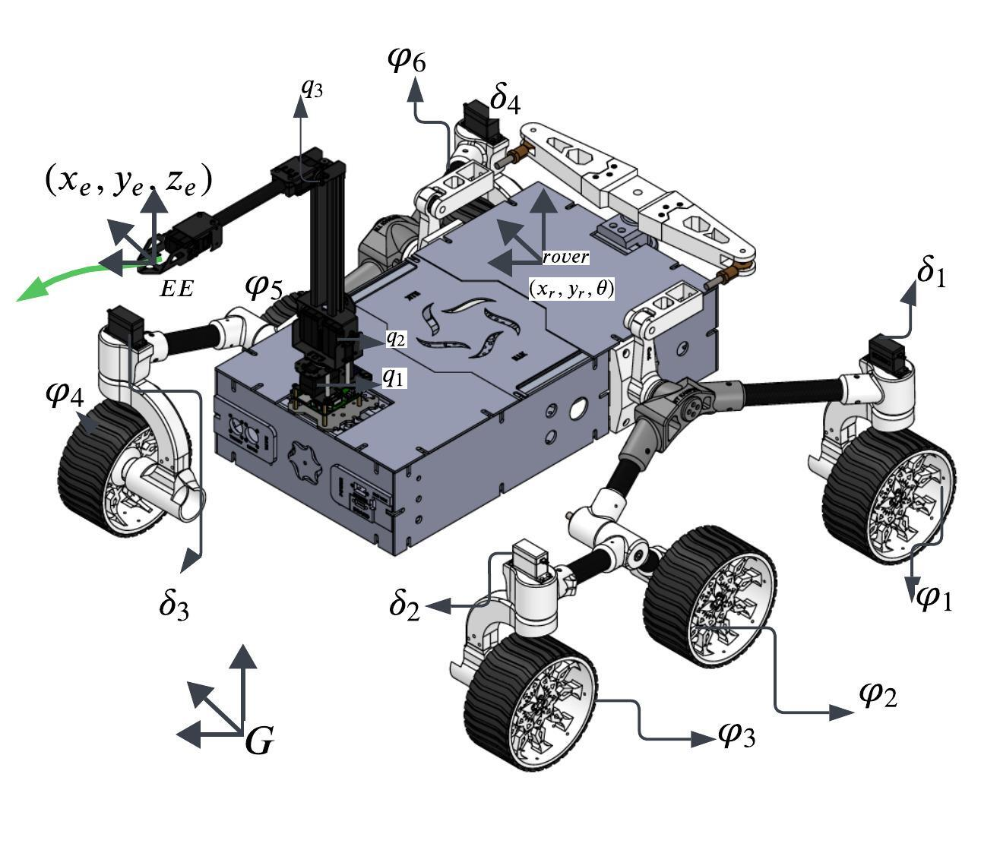
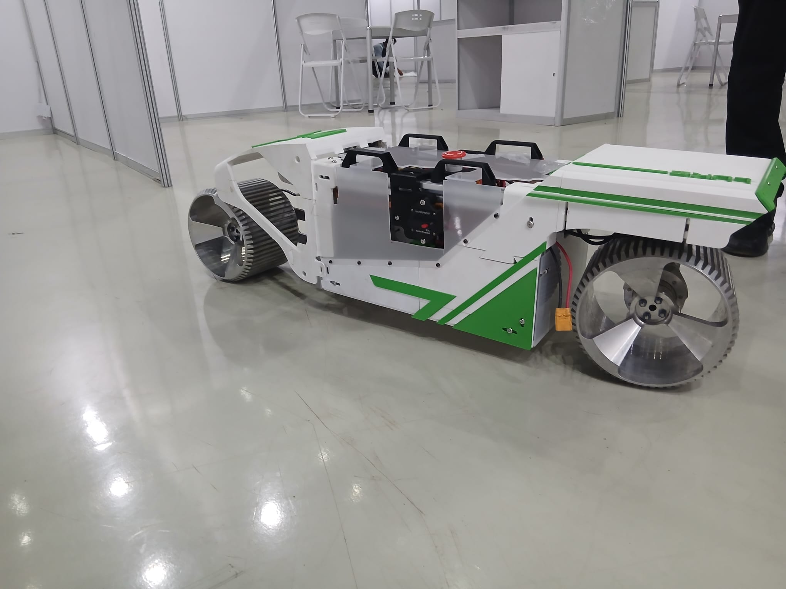

Energy Aware Trajectory Optimization Using DRL in Humanoid Robot Through Via-Point Learning
J. Sorokhaibam, A. Maruvattu, A. Dutta
roboticist · mpc & control · agri-robotics founder
I teach machines to move — across sand arenas, assembly lines, and rice fields. PhD researcher at IIT Kanpur; co-founder & CTO of Ceres FieldCheck.
initiate scroll ↓ATTITUDE REF · TAP CORE
// 01 — profile
I'm a PhD candidate in Mechanical Engineering at IIT Kanpur, working with Prof. Ashish Dutta on a stubborn, wonderful problem: making a 13-degree-of-freedom mobile manipulator — a six-wheeled rover carrying a robotic arm — trace precise paths with its end effector while its wheels sink and slip in sand. My answer so far is model predictive control that learns the slip as it happens and quietly shifts the work from the struggling base to the arm.
Before the PhD I spent two and a half years at Maruti Suzuki, making assembly lines flow faster in Gurugram — and, during the 2018 Kerala floods, running the worst-hit workshop in the state without missing a single delivery commitment. That year taught me more about engineering under constraints than any course ever has.
These days I split my life between the lab and a startup. As co-founder and CTO of Ceres FieldCheck, I build LUKE — an autonomous field robot that pulls weeds mechanically and catches crop disease early, so small farmers can stop spending half their income on chemicals. We won the Indo-German DWIH Innovators Connect in 2023, and the mission hasn't changed since: technology should serve those who feed us.
Off duty I'm a hobbyist photographer — there's a whole darkroom further down this page — a Lord of the Rings fan, and the former captain and driver of Team Unwired, our BAJA SAE India off-road racing team. A taste for machines that survive rough terrain, it turns out, never really leaves you.

SUBSYSTEMS LOADED
// 02 — the lab
The real one carries its arm on a six-wheeled Ackermann rover with rocker-bogie suspension, run by Teensy and ESP32 boards and localised with a Kinect and AprilTag markers on a five-by-seven-metre sand arena. This browser version weighs about half a megabyte.
Hit terrain slip and the base begins to drift while the wheels over-spin — exactly the disturbance my slip-adaptive controller is built to absorb. Watch the tracking error climb as the arm fights to keep its end-effector on the violet path.






VISUAL LOG — FIELDS, MACHINES, AND THE PEOPLE RESPONSIBLE
// 03 — mission archive
Hover a tile — or tap it — and it flips in 3D to the story on the back.

An autonomous field robot for small farmers: chemical-free mechanical weeding and early disease detection, one robot shared by a whole cooperative. Winner of the Indo-German DWIH Innovators Connect 2023, with grant backing from Goethe University and RWTH Aachen.
How do you track a precise path when the ground itself gives way? A lightweight neural network estimates wheel slip online and reshapes the controller's cost, shifting effort from the sinking base to the arm — an 18.5% tracking-error reduction on real hardware.
The full machine: six driven wheels, four steering axes and a three-axis arm, coordinated by a neural-network-based model predictive controller so the end effector holds its path over rough terrain. Presented at IEEE RoMoCo 2024 in Zakopane, Poland.
A family of controllers that embed null-space task hierarchies directly into the MPC decision variables — so a redundant robot can keep its camera level without ever compromising the gripper's path. Benchmarked against eight controllers across hundreds of simulation runs.
What happens when an actuator dies mid-mission? Physics-informed neural networks and meta-reinforcement learning that keep a mobile manipulator on its path when motors fail — plus robust MPC under actuator failure, presented at AIR 2025, IIT Jodhpur.
An indoor positioning system built from first principles: Decawave UWB radios on ESP32 boards, two-way ranging, an IMU, and an extended Kalman filter — roughly three centimetres of accuracy for the price of a phone, ground-truthed with a Kinect and ArUco markers.
// 04 — transmission log
J. Sorokhaibam, A. Maruvattu, A. Dutta
A. Maruvattu, A. Dutta
A. Maruvattu, A. Dutta
A. Maruvattu, A. Dutta
A. Maruvattu, A. Dutta — pp. 223–228
↳ the full log lives on Google Scholar
// 05 — state history
Graduated First Class, and both captained and drove for Team Unwired, our BAJA SAE India team, at the country's biggest student off-roading event — my first lesson in building machines that have to survive real terrain, from behind the wheel.
Assistant Manager on pick-to-light assembly-line efficiency in Gurugram — and the best-performing Graduate Engineer Trainee of my 2017 cohort. When the 2018 Kerala floods hit, I ran the worst-affected workshop in the state and still met every delivery commitment.
Mobile manipulators on deformable terrain, with Prof. Ashish Dutta — MPC, neural networks, and a rover that keeps finding new ways to slip. Also mathematics coordinator for an NGO running ~300 classes a month for nearby public schools.
Selected for the University of Southern Denmark's elite robotics & entrepreneurship programme — around 25 seats worldwide. Built a screw-hole detection system, and a lot of conviction about building things.
Our agri-robotics startup won the Indo-German tandem programme's second cohort. Now a registered company in Germany with grants from Goethe University and RWTH Aachen, and pilots with the Andhra Pradesh Department of Agriculture.
Presented the 13-DOF ANN-MPC work in the Tatra mountains. The robot stayed home; the results travelled well.
Second conference paper — model predictive control that keeps tracking when actuators fail.
Slip-adaptive MPC under journal review, LUKE's second generation taking shape on the drawing board, and a thesis slowly converging.
// 06 — the darkroom
Robots are the day job; light is the hobby. Everything below came off a phone camera on walks between labs, conferences, and home — mountain trails, northern streets, and an unreasonable number of campus flowers. Tap any frame to see it properly.
"The cosmos is within us. We're made of star stuff. We are a way for the cosmos to know itself."
— CARL SAGAN, COSMOS